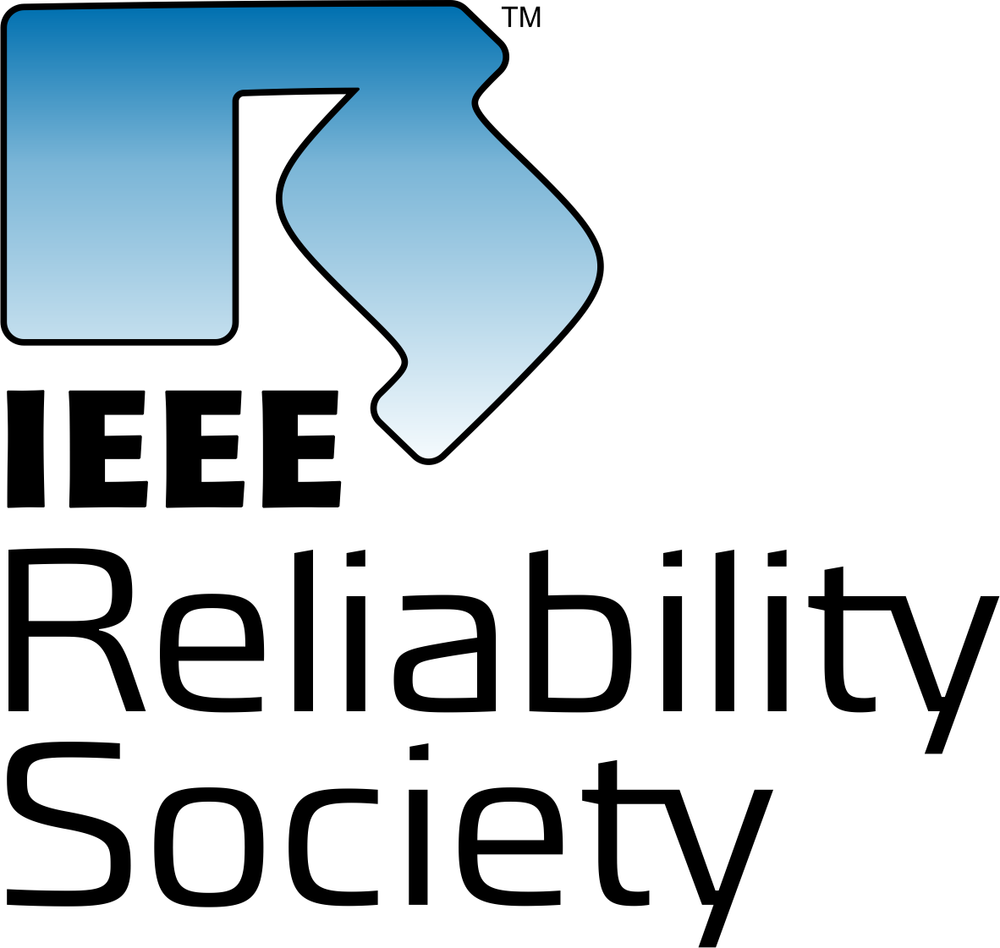
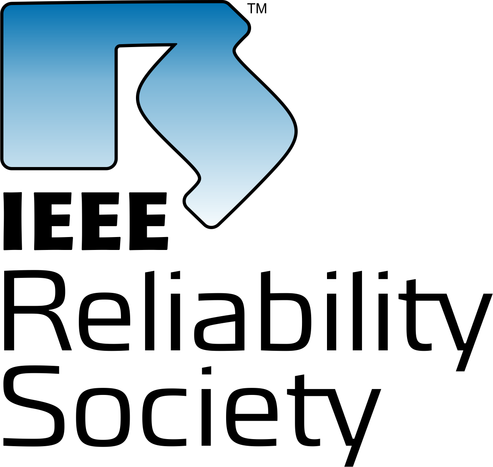
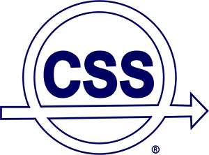
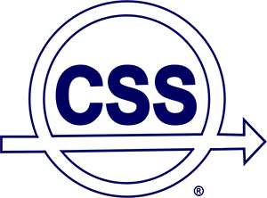

Welcome
The 8th IEEE World Forum on Internet of Things (IEEE WFIoT2022) is the premier event of the Multi-Society IEEE IoT Initiative. You will find a comprehensive and exciting program that brings the latest developments from industry, the business world, the public sector, and the research community. The World Forum attracts the most prominent people from across the breath of the IoT ecosystem, the latest news of significant innovations and advances from the academic community, and shared experiences from practitioners and end-users about the successes and challenges of IoT deployments. The World Forum is all about the nurture and promotion of IoT for the benefit of society and humanity. The conference is focused on the betterment of life through the responsible and ethical adoption of IoT technologies, applications, and solutions.
The Theme for the World Forum is “Sustainability and the Internet of Things”. You will find that the discussion and dialog at the conference will emphasize presentations and panels addressing the four pillars of sustainability: human, social, economic, and environmental. The World Forum will specifically focus on how technical IoT applications and solutions contribute to the seventeen Sustainability Development Goals that were developed in the UN Brundtland Report.
The IEEE WFIoT2022 will be held as a hybrid conference consisting of both Virtual Live Online and Face-Face sessions, that include local and remote presence. In view of the guidance about the COVID Pandemic and continued restrictions on international travel we have elected to hold the conference and all its components in their entirety. In doing so we will provide all participants with a safe and convenient way to be involved. At the same time, we will program the World Forum to be highly interactive with sessions timed to encourage broad participation from around the Globe.
IEEE WFIoT2022 brings together experts in IoT from around the world and the diverse community of stakeholders that make up the IoT ecosystem. Today that touches almost all sectors of the world economy. The World Forum will cover the breadth of activities, technologies, and applications in IoT reflecting the vast range of interests and investment in IoT and its building blocks with the following set of programs:
- Plenary Program addresses all registrants for the IEEE WFIoT2022. It consists of speeches and presentations from the foremost technologists and industry leaders in IoT, in key subject areas critical to the success and acceptance of IoT.
- The Technical Paper Program is the main technical track aimed at the Research and Academic community and consists of Technical peer reviewed papers with an emphasis on novel and original results and advanced ideas important and relevant to IoT and its future.
- Special Sessions consist of peer-reviewed papers and interactive presentations focused on a selected “hot” research topics of importance to IoT.
- Workshops consist of peer-reviewed papers, presentations, panel discussions, and summary results about advanced and important topics relevant to IoT.
- Masters/PhD Forum and Student Paper Contest (MP) is a program for graduate students entering careers in IoT, where the participants propose and discuss brand-new ideas addressing issues related to IoT.
- Industry Forums consists of presentations and panel discussions aimed at research topics important to industrial and business related IoT issues.
- Tutorials will provide detailed technical information about key technologies essential for developing IoT-related hardware, software, systems, and operations.
- Vertical and Topical Tracks cover designated topics important to IoT in general and to the host region. Leading experts will lead interactive presentations, focused on topics of importance to IoT practitioners, addressing aspects of actual IoT implementation, adoption, deployment, and operation.
- Women in Engineering (WIE) Forum facilitates discussion about topics related to women in the IoT community, in areas that affect industry, the public sector, and the research community.
- Young and Professionals (YP) Forum provides a world-wide opportunity for networking, information sharing, and exchange of opinions among young professionals in research and academia, business, industry, and in engineering practice.
- Entrepreneurial Forum will brings together startups, small and medium business owners, incubator organizations, and venture capitalists, to share experience that will help manage and grow and successful IoT companies.
IMPORTANT DATES
Proposal submissions for Special Sessions, Workshops and Industry Forums
28 March 2022Proposal submissions for Vertical and Topical Track:
28 March 2022Proposal submissions for Tutorials:
28 March 2022Submissions for speaker nominations for Women in Engineering Forum, Young and Professionals Forum and Entrepreneurial Forum:
13 June 2022Technical Paper Submissions:
13 June 2022Paper submissions for Special Sessions and Workshops:
13 June 2022Paper submissions accompanying Vertical and Topical Track presentations:
13 June 2022PROGRAMS
Plenary Program
Special Sessions
Workshops
Industry Forum
Tutorials
Masters/PhD Forum and Student Paper Contest
Vertical and Topical Tracks
Women in Engineering Forum
Young Professionals Forum
Entrepreneurial Forum
Our IEEE Spnosring Societies and Councils
 
 
